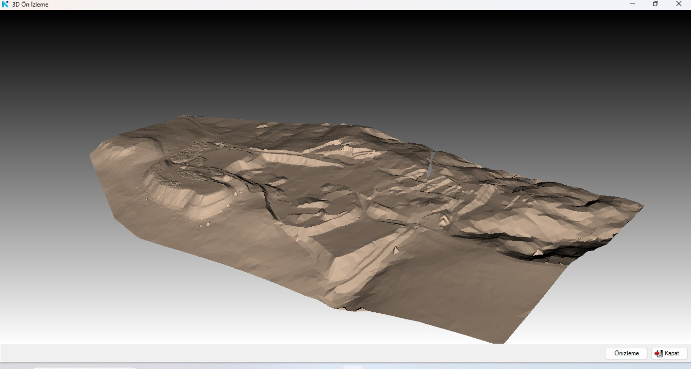
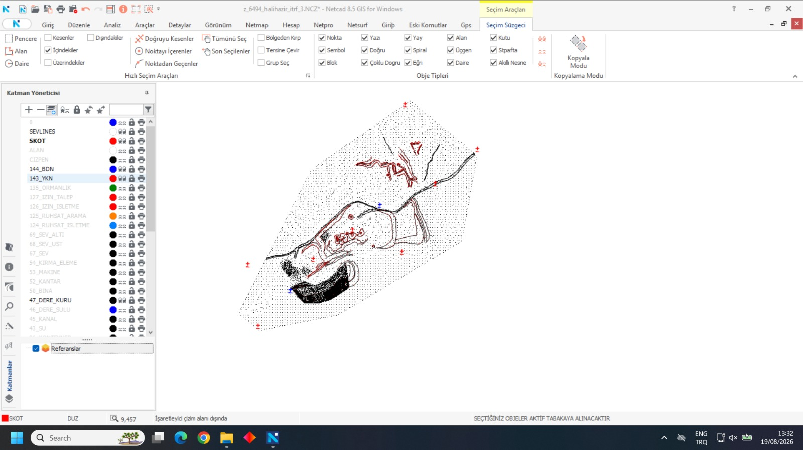
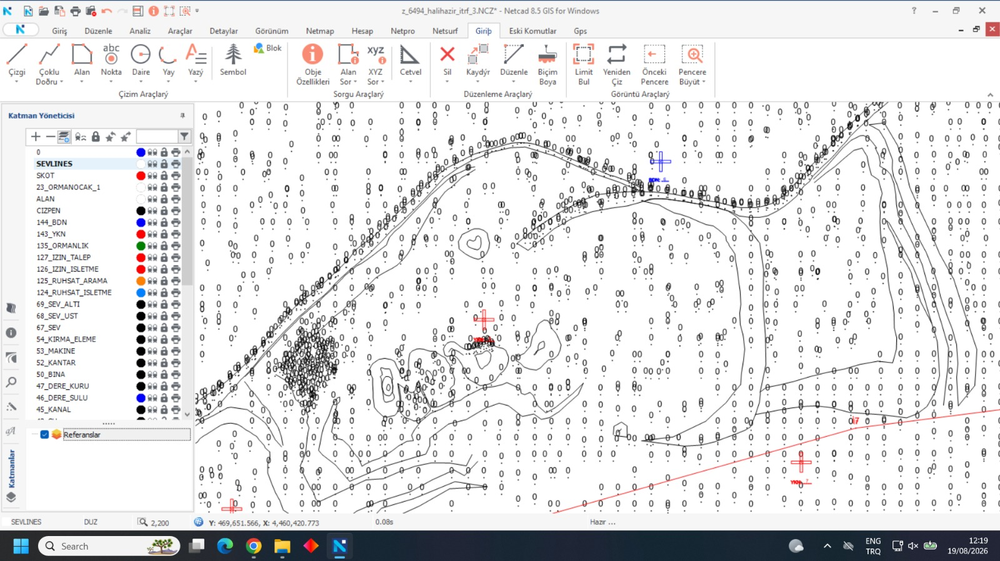
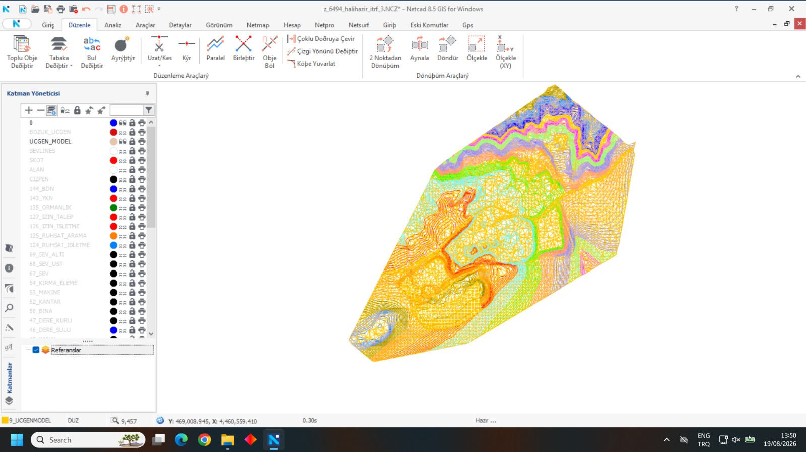

01 / OPENLAYERS
OpenLayers Map
A personal travel map with zoom-based marker visibility.
Maps page →Selected work from my geomatics internship and ongoing Web GIS coursework.
During my internship, I worked with topographic data in Netcad. These screenshots document elevation points, contour lines, a triangulated terrain surface, and a 3D terrain preview. The experience introduced me to practical terrain-data visualization and GIS workflows.

3D visualization of the terrain surface in Netcad.
A visual overview of the terrain modeling work. This is an HTML table with project images and descriptions.
| Screenshot | Stage | Description |
|---|---|---|
 | Data Overview | Inspecting elevation points, mapped features and GIS layers. |
 | Terrain Detail | Examining contour lines and elevation point distribution. |
 | Triangulated Surface | Visualizing the terrain through a triangulated irregular network (TIN). |
| 3D Preview | Reviewing the resulting terrain representation in three dimensions. |
For my Web GIS course, I am building interactive maps with two JavaScript libraries. These interactive maps use OpenLayers and Leaflet to share my travel memories and favorite places in Ankara.
A personal travel map with zoom-based marker visibility.
Maps page →An Ankara map with interactive markers and controlled world wrapping.
Maps page →